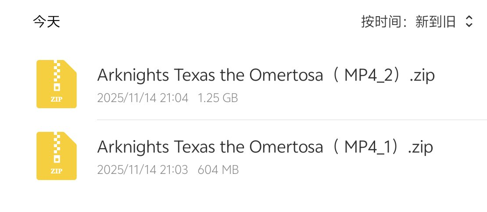
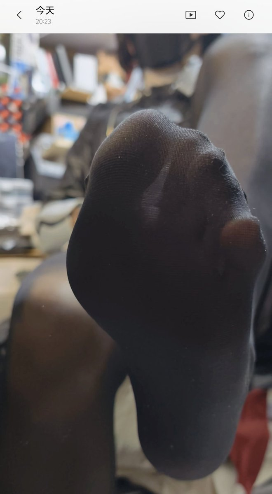

asuka 🏳️⚧️🍥🏳️🌈🏴
@H4lf_L13_F8964
RT @Gewehr_G36: 图包更新上线啦，本期的内容是明日方舟异德破翼者的袜足底特写+裸足底特写+R18色色 内容包含3份视频(两份色色1份挑逗互动)。本期内容有3份视频与28张照片附带视频小赠品 指定赞赏码20R即可解锁 同步获得本人好友位+扩列门槛粉丝群 Q号发放:3…


『塔卫二在逃魅魔』ChauChatSpecter_邵鲨
@Gewehr_G36
图包更新上线啦，本期的内容是明日方舟异德破翼者的袜足底特写+裸足底特写+R18色色 内容包含3份视频(两份色色1份挑逗互动)。本期内容有3份视频与28张照片附带视频小赠品 指定赞赏码20R即可解锁 同步获得本人好友位+扩列门槛粉丝群 Q号发放:3512676920（不定期在线，更多内容可以通过更多米米赞助解锁 https://t.co/FJcLH14kHT